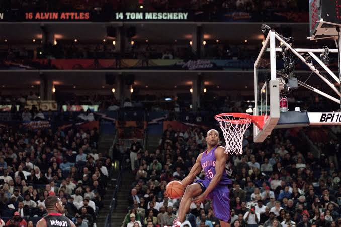
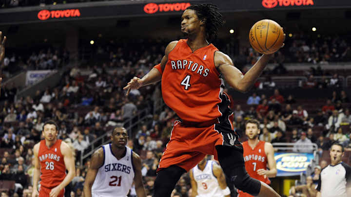
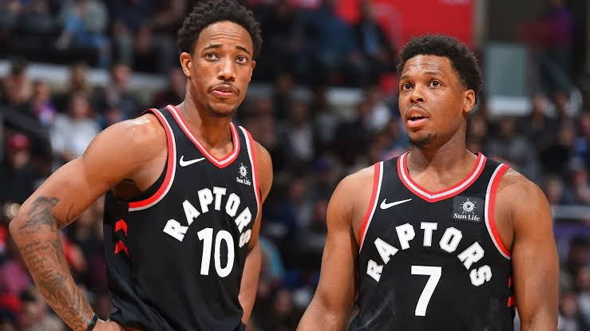
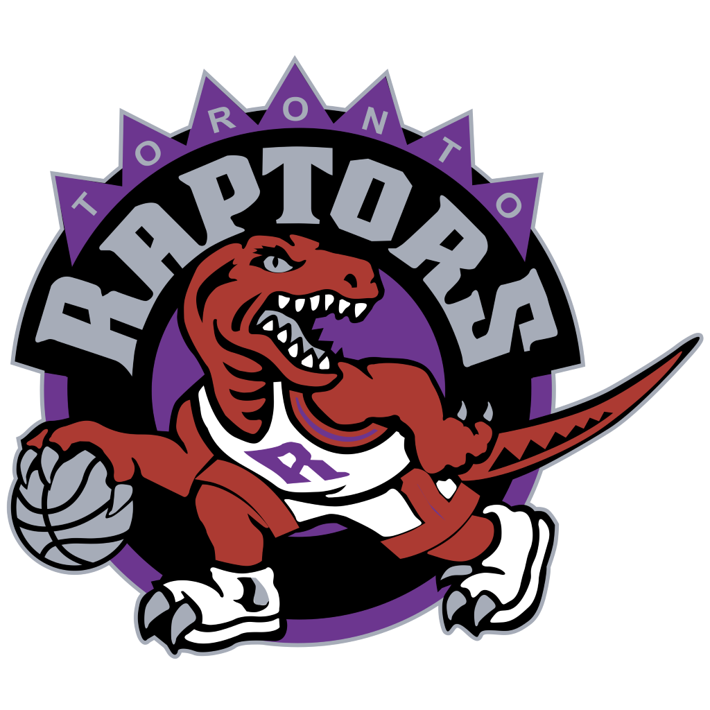
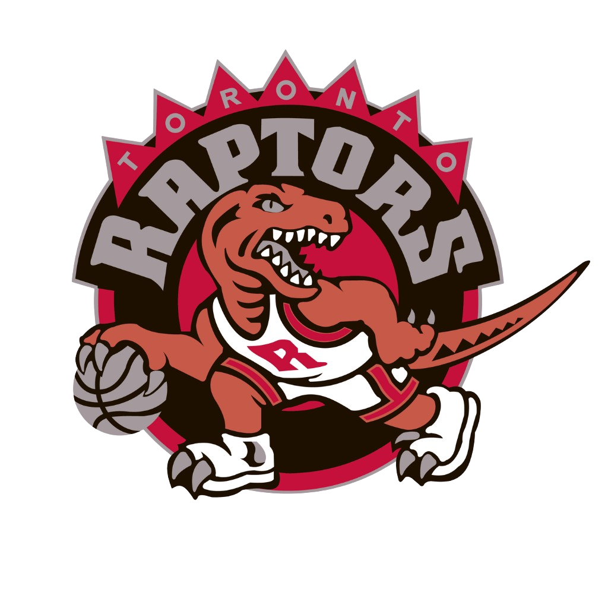
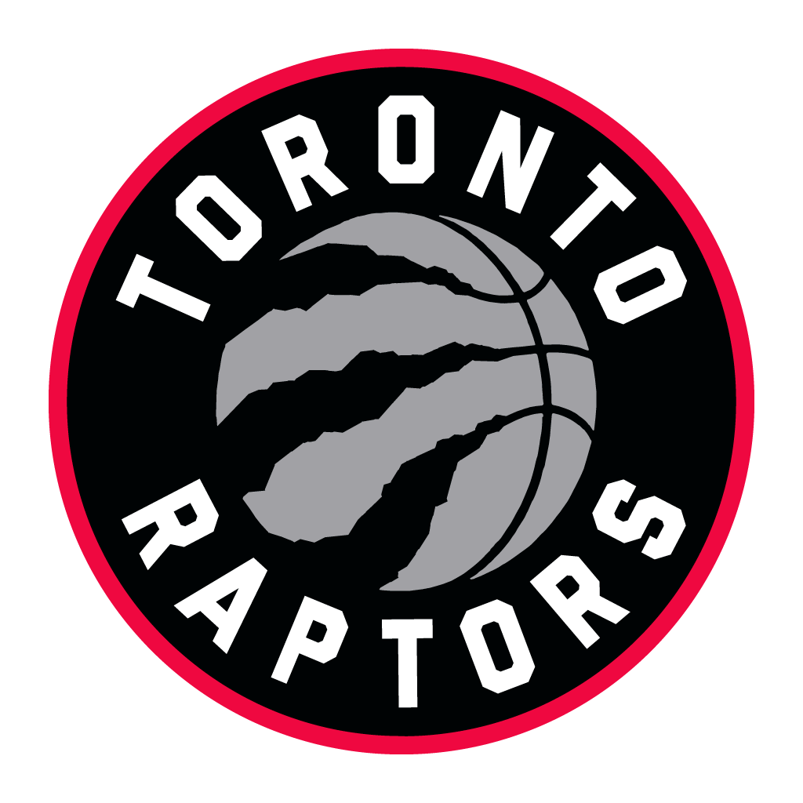
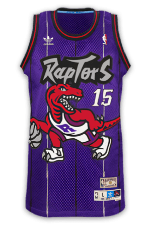
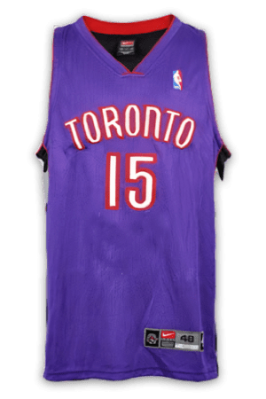
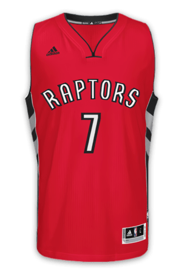
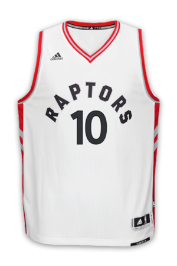

Todos os times da NBA, exceto um, são sediados nos Estados Unidos.
Esse time atípico é o Toronto Raptors, um time de basquete relativamente novo que foi estabelecido em 1995.
Então, como um time com uma história que remonta a apenas 25 anos conquistou o campeonato da NBA em 2019?
Você está prestes a aprender sobre a história do único time canadense da NBA
, incluindo informações sobre os primeiros anos, logotipos e regatas, o estádio onde eles jogam e onde o time está agora.
Os Primeiros anos
Os Toronto Raptors foram criados em 1995 como parte da expansão da NBA para o Canadá. A equipe enfrentou dificuldades nos primeiros anos,
mas a aquisição de Vince Carter em 1998, através de uma troca no Draft, foi um ponto de virada. Carter rapidamente se destacou, ganhando o prêmio de
Novato do Ano e atraindo muitos fãs, aumentando a relevância da franquia na NBA.
Era Vince Carter (1999-2004)
Com Carter e a adição de veteranos como Charles Oakley e Kevin Willis, os Raptors fizeram sua primeira aparição nos playoffs em 2000. Em 2001, a
equipe ganhou sua primeira série de playoffs, mas foi derrotada pelos Philadelphia 76ers na semifinal da Conferência Leste. Carter foi fundamental para o sucesso da
equipe durante esse período.

Pós-Carter e ascensão de Chris Bosh (2004-2010)
Após a saída de Carter em 2004, Chris Bosh emergiu como o novo líder da equipe. Em 2006, Bryan Colangelo foi nomeado gerente geral e, com a ajuda de Bosh e do primeiro
escolhido no Draft de 2006, Andrea Bargnani, os Raptors voltaram aos playoffs. Mas, cairam na primeira rodada pelo New Jersey Nets (hoje, Brooklyn Nets)

Era Derozan e Kyle Lowry (2010-2018)
Com a saída de Bosh em 2010, a equipe entrou em um período de reconstrução. Masai Ujiri assumiu como gerente geral em 2013 e, sob sua liderança, os Raptors se tornaram
uma equipe consistentemente competitiva. A dupla DeMar DeRozan e Kyle Lowry levou a equipe a várias aparições nos playoffs e a cinco títulos de divisão.

Primeiro Titulo (2019)
Insatisfeito com a falta de sucesso nos playoffs, Ujiri fez mudanças significativas, incluindo a troca de DeRozan por Kawhi Leonard e Danny Green, e a aquisição de Marc Gasol.
Essas mudanças culminaram na temporada 2018-2019, quando os Raptors venceram o Golden State Warriors nas finais da NBA, conquistando seu primeiro título na história da franquia.
Logotipos
Os logotipos do time Toronto Raptors mudaram algumas vezes desde que o time foi criado em 1995. Uma coisa permanece estável entre
os diferentes logotipos: as cores preto, vermelho, branco e prata.

1995-1999
Durante os primeiros 12 anos como um time da NBA, o logotipo do Raptors consistia em um dinossauro de desenho animado driblando
uma bola de basquete. O logotipo infundiu cada uma das quatro cores do time em um design e padrão bastante decorativos.

1999-2008
Na temporada de 2009, os Raptors retiraram o roxo do logotipo do time e mudaram o logotipo para um design vermelho,
prata e preto do mesmo logotipo dos anos anteriores.

2008-presente
A temporada de 2015 dos Raptors levou a uma mudança substancial no logotipo do time. O time retirou o dinossauro do logotipo
completamente e simplificou o logotipo com o nome do time claramente impresso em branco, bem como uma bola de basquete com aparência jurássica.
Jerseys

1995-1998
O Toronto Raptors tem um longo histórico de troca de uniformes a cada poucos anos desde 1995. O time parece mudar suas regatas de forma muito
mais consistente do que seu logotipo.
A regata inicial do Toronto Raptors foi usada entre 1995 e 1998, quando os Raptors jogaram no SkyDome. A regata parece muito semelhante ao
logotipo do time na época, que inclui todas as quatro cores do time e um Raptor jogando basquete.

1999-2007
A temporada de 1999 no Air Canada Centre marcou a revelação da segunda regata conhecida do Toronto Raptors. Esta regata era significativamente
mais simples, com um tom roxo e o nome "Toronto" na frente.

2008-2014
Em 2008, o time parece ter abandonado o roxo e feito a transição para uma regata vermelha de aparência similar. Essa regata substituiu
"Toronto" por "Raptors".

2015-HOJE
Uma das regatas mais recente do Toronto Raptors foi lançada em 2015. Esta regata é principalmente branca com "Raptors" impresso em letras pretas na frente.
ARENA
Toronto Raptors jogava no centro de Toronto na Arena SkyDome, agora conhecido como Rogers Centre, nos seus 4 primeiros anos de NBA. Este estádio é agora a casa oficial do time da MLB,
o Toronto Blue Jays.
O Raptors fez uma mudança para o Air Canada (agora conhecido como Scotiabank Arena) em 21 de fev. de 1999. É aqui que o Raptors e o Toronto Maple Leafs, time da NHL, continuam a jogar até hoje.